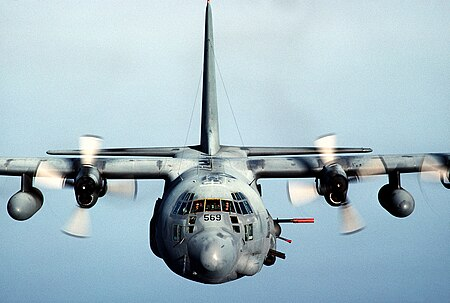

Топ нашого списку відкриває американський AC-130 або ж "Ангел смерті"
AC-130 Spectre (укр. «Спектр»)— американський ганшип на основі транспортного літака C-130 фірми Lockheed. Установку озброєння та додаткового обладнання здійснювала фірма Боїнг. Брав активну участь у В'єтнамській війні. 